Загальна кількість зареєстрованих видів фауни становить 255 видів хребетних, з них:
| Типи видів | Їх кількість |
|---|---|
| променеперих риб | 24 |
| саламандрових (хвостатих) | 2 |
| безхвостих земноводних | 9 |
| черепах | 1 |
| плазунів | 4 |
| птахів | 186 |
| ссавців | 29 |
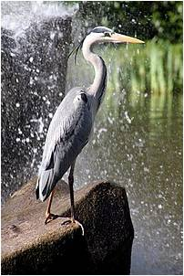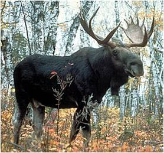
Тут на гніздуванні трапляється чапля сіра, крижень, лунь очеретяний, курочка водяна, лиска, очеретянка велика, гуска сіра, мартин малий, норець малий, плиска жовтоголова. В лісах водяться гадюка звичайна,шуліка чорний, лось, кабан дикий та інші тварини. Річки та озера парку багаті на рибу, серед якої найчастіше трапляється щука, плітка, лин, карась золотий та інші види цінних риб. Є також такий червонокнижний вид, як мінога українська. З земноводних і плазунів трапляється тритон звичайний, жаба ставкова, черепаха болотяна, вуж звичайний. Місцями можна побачити бобрів, проте вони тут не будують річкових загат.
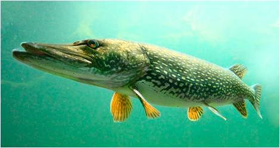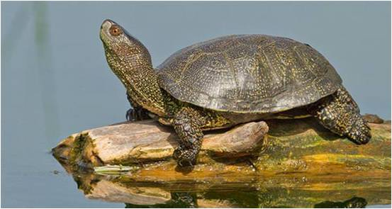
На цій території водиться 28 видів фауни, занесених до Червоної книги України: ропуха очеретяна, лелека чорний, казарка червоновола, гоголь, скопа, лунь польовий, шуліка рудий, змієїд, орел-карлик, підорлик малий, беркут, орлан-білохвіст, глушець, журавель сірий, кулик-сорока, коловодник ставковий, кульон великий, крячок каспійський, пугач, дятел білоспинний, сорокопуд сірий, очеретянка прудка, горностай, норка європейська, борсук, видра річкова, вусач мускусний, махаон, контурниця пишна, а також 8 видів, занесених до Європейського Червоного списку тварин, що перебувають під загрозою зникнення у світовому масштабі: казарка червоновола, шуліка рудий, орлан-білохвіст, деркач, очеретянка прудка, вовк, соня горішникова та видра річкова і 2 види, занесені до Червоної книги Міжнародного Союзу Охорони Природи (МСОП): ропуха очеретяна та орлан-білохвіст. Територія парку є єдиним місцем гніздування синиці білої.
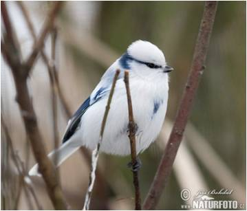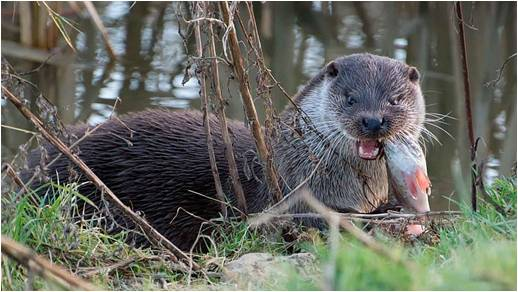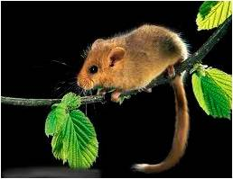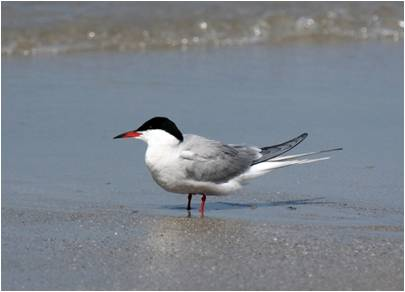
Крім того тут трапляється: 220 видів хребетних, віднесених до Конвенції про охорону дикої флори і фауни та природних середовищ існування в Європі; 49 видів птахів, віднесених до Угоди про збереження афро-євразійських мігруючих водно-болотяних птахів; 1 вид кажанів, віднесених до Угоди про збереження кажанів в Європі; 27 видів хребетних, віднесених до Конвенції про міжнародну торгівлю видами дикої фауни і флори, що перебувають під загрозою зникнення.
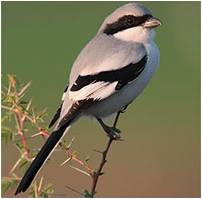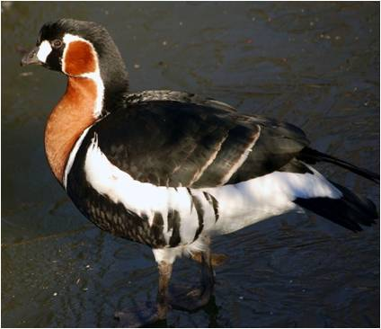
Територія парку є місцем масових сезонних міграцій птахів (120—150 тисяч особин). Частина території відноситься до водно-болотних угідь міжнародного значення.
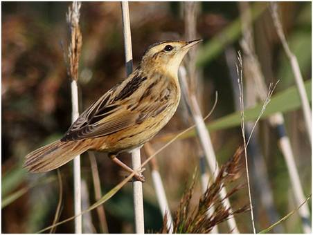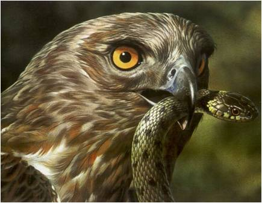